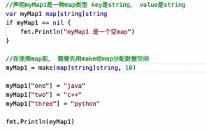
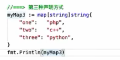
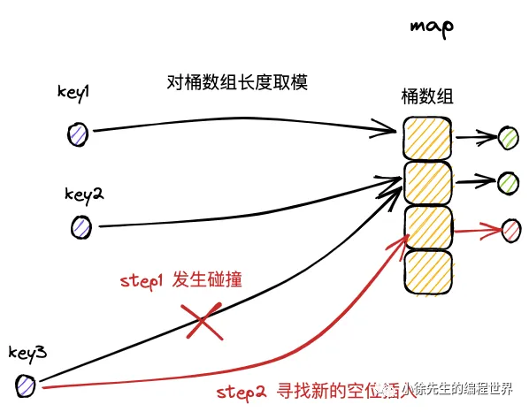
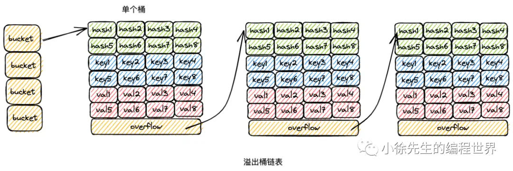
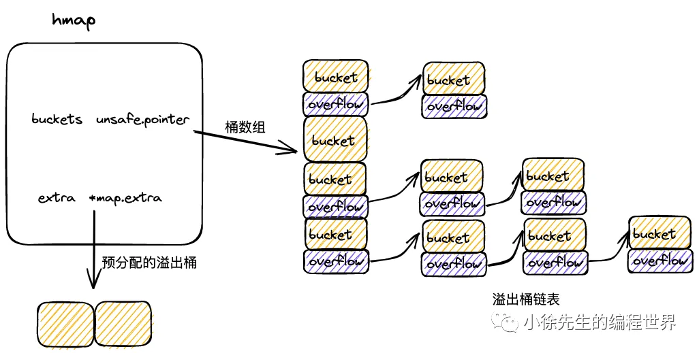
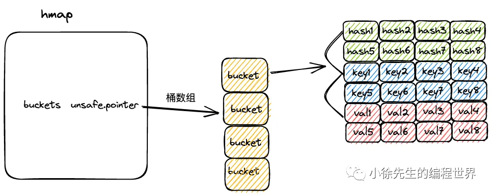

（1）存储基于 key-value 对映射的模式；
（2）基于 key 维度实现存储数据的去重；
（3）读、写、删操作控制，时间复杂度 O(1).
定义
声明
- 

- 如果满了的话再添加就会再加一个10(当前容量)
- map里面感觉长度和容量变成一个东西了
- 然后实际上存入的内容并非按存入顺序,而是采用基本的哈希方式来存的,可以认为是随机的.并且go会随机化起始点,所以哪怕两次遍历一个数组,得到的结果是不同的.因此如果要按照key的字母顺序来处理map数据,需要有一个有序索引slice然后用这个slice去map里面一个个查询
-
make是必须的,要有一个开辟空间的这么一个声明,才会有空间(虽然不设定容量的话空间为0)
- 没有空间时赋值:越界报错
- 有空间为0,赋值:会一个一个开辟的所以没事

-
就是在声明的时候直接初始化,一般用这个
key的类型要求
必须为可比较的类型，slice、map、func不可比较
使用方式
读
v1 :=myMap[10]
//倘若key存在,则获取到对应的val
//倘若key不存在或者map未初始化,则会返回val类型的零值
v2,ok := myMap[10]
//添加一个bool类型的flag标识,读取成功则为true,读取失败为false[读取失败,key不存在/map未初始化]同一种语法能够实现不同返回值类型的适配，是由于代码在汇编时，会根据返回参数类型的区别，映射到不同的实现方法
写
myMap[5] = 6
//如果map未初始化,直接执行写操作会导致panic报错删
delete(myMap,5)
//key存在:删除对应整个键值对
//key不存在或map未初始化,方法会直接结束,不会产生显式提示遍历
for k,v := range myMap{
// ...
}
for k := range myMap{
// ...
}
//获取key,不关注val的取值两次遍历一个数组,得到的结果是不同的.因此如果要按照key的字母顺序来处理map数据,需要有一个有序索引slice然后用这个slice去map里面一个个查询
并发冲突
map 不是并发安全的数据结构，倘若存在并发读写行为，会抛出 fatal error.
具体规则是：
（1）并发读没有问题；
（2）并发读写中的“写”是广义上的，包含写入、更新、删除等操作；
（3）读的时候发现其他 goroutine 在并发写，抛出 fatal error；
（4）写的时候发现其他 goroutine 在并发写，抛出 fatal error.
需要关注，此处并发读写会引发 fatal error，是一种比 panic 更严重的错误，无法使用 recover 操作捕获. 待解决
核心原理
map 又称为 hash map，在算法上基于 hash 实现 key 的映射和寻址；在数据结构上基于桶数组实现 key-value 对的存储.
以一组 key-value 对写入 map 的流程为例进行简述：
（1）通过哈希方法取得 key 的 hash 值；
（2）hash 值对桶数组长度取模，确定其所属的桶；
（3）在桶中插入 key-value 对.
- hash 的性质，保证了相同的 key 必然产生相同的 hash 值，因此能映射到相同的桶中，通过桶内遍历的方式锁定对应的 key-value 对.
- 因此，只要在宏观流程上，控制每个桶中 key-value 对的数量，就能保证 map 的几项操作都限制为常数级别的时间复杂度.

hash
hash 译作散列，是一种将任意长度的输入压缩到某一固定长度的输出摘要的过程，由于这种转换属于压缩映射，输入空间远大于输出空间，因此不同输入可能会映射成相同的输出结果. 此外，hash在压缩过程中会存在部分信息的遗失，因此这种映射关系具有不可逆的特质.
（1）hash 的可重入性：相同的 key，必然产生相同的 hash 值；
（2）hash 的离散性：只要两个 key 不相同，不论其相似度的高低，产生的 hash 值会在整个输出域内均匀地离散化；
（3）hash 的单向性：企图通过 hash 值反向映射回 key 是无迹可寻的.
（4）hash 冲突：由于输入域（key）无穷大，输出域（hash 值）有限，因此必然存在不同 key 映射到相同 hash 值的情况，称之为 hash 冲突.
bucket
map 中，会通过长度为 2 的整数次幂的桶数组进行 key-value 对的存储：
（1）每个桶固定可以存放 8 个 key-value 对；
（2）倘若超过 8 个 key-value 对打到桶数组的同一个索引当中，此时会通过创建桶链表的方式来化解这一问题.
hash冲突
- 首先，由于 hash 冲突的存在，不同 key 可能存在相同的 hash 值；
- 再者，hash 值会对桶数组长度取模，因此不同 hash 值可能被打到同一个桶中.
- 综上，不同的 key-value 可能被映射到 map 的同一个桶当中.
此时最经典的解决手段分为两种：拉链法和开放寻址法.
- 拉链法，将命中同一个桶的元素通过链表的形式进行链接，因此很便于动态扩展
- 开放寻址法, 在插入新条目时，会基于一定的探测策略持续寻找，直到找到一个可用于存放数据的空位为止.

map的解决
在 map 解决 hash /分桶 冲突问题时，实际上结合了拉链法和开放寻址法两种思路. 以 map 的插入写流程为例，进行思路阐述：
（1）桶数组中的每个桶，严格意义上是一个单向桶链表，以桶为节点进行串联；
（2）每个桶固定可以存放 8 个 key-value 对；
（3）当 key 命中一个桶时，首先根据开放寻址法，在桶的 8 个位置中寻找空位进行插入；
（4）倘若桶的 8 个位置都已被占满，则基于桶的溢出桶指针，找到下一个桶，重复第（3）步；
（5）倘若遍历到链表尾部，仍未找到空位，则基于拉链法，在桶链表尾部续接新桶，并插入 key-value 对.
就是先用开放寻址,后用拉链法,对每个桶通过开放寻址保证填满
扩容优化性能
map 的桶数组长度固定不变，那么随着 key-value 对数量的增长，当一个桶下挂载的 key-value 达到一定的量级，此时操作的时间复杂度会趋于线性，无法满足诉求.
- 因此在实现上，map 桶数组的长度会随着 key-value 对数量的变化而实时调整，以保证每个桶内的 key-value 对数量始终控制在常量级别，满足各项操作为 O(1) 时间复杂度的要求.
map 扩容机制的核心点包括：
（1）扩容分为增量扩容和等量扩容；
（2）当桶内 key-value 总数/桶数组长度 > 6.5 时发生增量扩容，桶数组长度增长为原值的两倍；
（3）当桶内溢出桶(从第二个开始到结束)数量大于等于 2^B 时( B 为桶数组长度的指数，B 最大取 15)，发生等量扩容，桶数组的长度保持为原值；[考虑到kv对不多,但是溢出桶很多的情况(可能本来很多后来慢慢删掉了,会有很多空洞)]
（4）采用渐进扩容的方式，当桶被实际操作到时，由使用者负责完成数据迁移，避免因为一次性的全量数据迁移引发性能抖动.就是说分摊到后续的每一笔写操作中去这样,比较温和.
key属于哪个桶是有映射关系的,哈希不变,但是对桶数组取模有影响,就是加上一倍老数组个数.
- 对4取模,得到的结果是0 那么桶0里面的kv对 key取哈希后得到最低两位都是00(对4取模等价于对3按位与)桶1 最低位01.
- 那扩容后对8取模,等价于对7按位与.那么最第三位都要是0 按位与出来=0的才能放在8桶数组的0号位.最低位是100的会放在4号位,和本来的0号位差4
- 所以说0号桶里的数,在扩容后,要么在0要么在4,差的就是一倍的老数组个数.就是大致被拆成两份,因此每个桶中的数据规模也大致变成原来的一半.
数据结构
源码位置在runtime/map.go
hmap =map
- count 总kv对数量
- B unit8 标注出桶数组的长度是2的B次方(1<<B)
- buckets unsafe.pointer 指向桶数组起点位置
- extra 预先申请好的溢出桶节点
对每个kv 还会存一个top值对应key的哈希值高八位来标识一些额外含义

type hmap struct {
count int
flags uint8//map状态标识,标识map是否被goroutine并发读写
B uint8
noverflow uint16 //溢出桶的数量
hash0 uint32 //hash随机因子,生成key的hash值得时候会用到
buckets unsafe.Pointer //桶数组
oldbuckets unsafe.Pointer //扩容过程中老得同数组
nevacuate uintptr//扩容进度标识,因为扩容是渐进的
extra *mapextra
}mapextra 溢出桶

type mapextra struct {
overflow *[]*bmap//供桶数组buckets使用的溢出桶
oldoverflow *[]*bmap//扩容流程中,老桶数组使用的溢出桶
nextOverflow *bmap//下一个可用的溢出桶
}在 map 初始化时，倘若容量过大，会提前申请好一批溢出桶，以供后续使用，这部分溢出桶存放在 hmap.mapextra 当中：
bmap =map中的桶

可以存储8组kv对,以及一个指向下一个桶的指针
每组kv对包括 key的高八位哈希值tophash,key,val 三个部分.每组kv对可以直接通过内存地址偏移的方式去找.所以下面三个值都不是太有用
const bucketCnt = 8
type bmap struct {
tophash [bucketCnt]uint8
//keys [bucketCnt]T
//values [bucketCnt]T
//overflow uint8
}